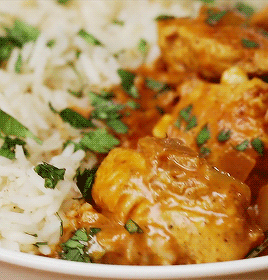

Main Course
Garlic Butter Chicken
Basted pan-seared chicken breast over fluffy cilantro basmati rice.
Key Ingredients
4 Chicken Breasts
2 tbsp Butter
4 Cloves Garlic
1.5 Cups Basmati Rice
2 Fresh Limes
½ Cup Cilantro
Active Cooking Step
Step 1 of 4
Step 1
Cook & Steam Rice
Rinse basmati rice until water runs clear. In a medium saucepan, combine rice, broth, and salt. Bring to a boil, cover, reduce heat to low, and simmer for 15 minutes. Remove from heat and let sit covered for 10 minutes before fluffing with a fork.